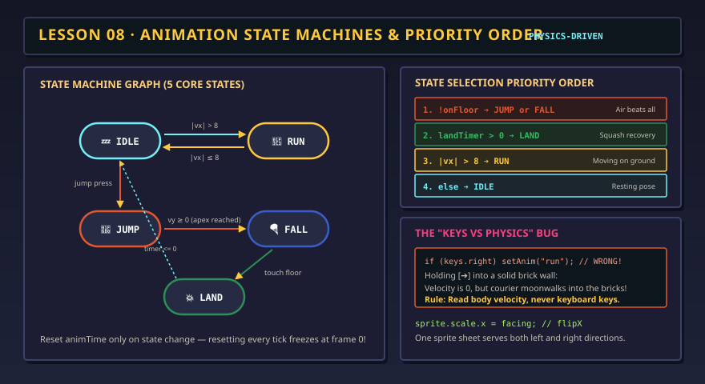

Bring your sprites to life
Draw it. Test it in motion. Export your own asset kit.
Loading sprite project…
Try your character
Start test, then focus the scene. Arrows / WASD move; Shift runs; Space jumps; X swings; C drinks; H hurts; V celebrates; F tests defeat; R retries. Up/down movement applies to top-down projects.
Hold a movement button to travel. Keyboard or assistive activation of a movement button advances one movement step. Run can be toggled above.
Test starts paused. Use Start test or advance one step at a time.
Why this pose?
Idle
- Facing
- Actual speed
- Height / phase
- Source clip
- Pose
Recent transitions
This log is available to read without announcing every animation frame. Pause to inspect it.
Uses the full project from Pixel Sprite Studio in this browser: every action, facing direction, colour and frame duration. Opening a JSON also makes it the current studio project. Download your current JSON first to keep a separate copy.
Change one rule. See what breaks.
Damage interrupts sword and potion actions. Defeat and victory hold until Retry. Turning off the action lock allows movement during an action while keeping its one-shot animation. Restarting the clock deliberately prevents an action from finishing. Action events use the clip even if its studio preview was set to loop.
Check your asset set
A drawn frame contains at least one visible pixel. This checks for blanks; use a partner test to judge readability, foot placement and the character’s personality. You can export a small useful set before drawing every action.
Leave with assets you can reuse
The ZIP contains every sprite sheet, timing data, editable project, your test report and a small working browser game. Unzip it and open index.html. You can edit game.js, or take the PNGs and JSON into another engine. The older Pixel Courier lessons still use their separate five-state art format.
Lesson 08 · DIY assets in a working game
A drawing becomes an asset when another project can use it.
You have made poses in Pixel Sprite Studio. Now test whether they communicate movement, intention and consequences in a game. A state machine chooses the current animation from movement, events and game rules. Your job is to make the artwork and those rules work together.
Work like a small asset team.
- Make a small set you can finish.Start with one character, one camera, idle, walk and one action. Keep the resolution and palette consistent. Then add running, hurt and victory. A finished, readable small set is useful.
- Test your actual files.Save the project in the drawing studio, then return here and reload it. On a different device, use Save editable project JSON and Open studio project JSON. The bench reads every clip; it does not squeeze your work into the older courier format.
- Find one specific problem.Does a foot float above the anchor? Does the sword hit before it looks ready? Is the worried expression invisible at native size? Pause, read the source clip and choose Edit this clip to return to that exact action and direction.
- Revise and repeat.Change a few pixels or one duration, save, reload the test and repeat the same action. Keep the rest of the scene unchanged so you can see what the revision did.
- Package something someone can use.Export the playable asset kit. It includes your art, timing, rules, test evidence and a working test scene. Have a partner unzip it, open index.html and explain how your character moves.
The goal is your own reusable art. The starter explorer helps you learn the controls; change its silhouette, costume, palette and action poses, or start a blank studio project. Write your character description and credit any outside art in the studio.
What happened? Which pose tells the player?
The bench separates movement (idle, walk, run, rising, falling, landing), actions (sword, potion, hurt) and endings (victory, defeat). For this small demo, one visible state owns the animation at a time. Larger games can layer an upper-body action over walking or keep a shield effect active independently.
| Condition or event | What the player sees | What to verify in your assets |
|---|---|---|
| Actual speed is zero | Idle, including when movement is blocked by the wall. | Feet settle; the breathing loop does not look like walking. |
| Moving / running | Walk, or run with Shift / Run instead of walk. | A run has a different stride and rhythm, not just a renamed walk. |
| Jump / ground contact | Prepare, rise, apex, descent, land, recover. | The landing drawing waits for the character to reach the floor. |
| Attack or drink event | A one-shot clip; the chosen frame applies the effect once. | The effect and the visible contact or sip agree. |
| Damage | Hurt interrupts an action; health decreases by 25. | The recoil reads immediately and returns to movement afterward. |
| Health reaches zero / goal event | Defeat / victory. The ending holds until Retry. | The ending is distinct from ordinary hurt and has a clear next step. |
These are deliberate game-design choices. Another game might allow attacks in the air, movement while drinking, or victory interruptions. Write the rule first, then make a transition that expresses it.
if (health <= 0) playOnceAndHold("gameover");
else if (reachedGoal) playOnceAndHold("victory");
else if (damageEvent) interruptWith("hurt");
else if (actionInProgress) continueAction();
else if (aboveFloor) showRiseOrFallPose();
else if (justLanded) showLandingAndRecovery();
else if (actualSpeed > 0) play(running ? "run" : "walk");
else play("idle");
// Restart the animation clock only when entering a new state.
// This sketch names the decisions; game.js in the ZIP implements them.Keep facing separate from movement. Stopping should preserve the last facing direction. In a top-down project, use your up, down, left and right clips. A horizontal flip can help with a symmetric side-view character, but it cannot invent a back view or preserve a sword hand automatically.

A good jump drawing must meet the floor at the right time.
The studio’s jump example is a full six-pose study. Playing that entire strip on a timer can show a landing before the character reaches the floor. This bench uses the drawings as phases:
- Frame 1: grounded anticipation; its duration is the takeoff delay.
- Frame 2: upward push while rising quickly.
- Frame 3: tucked pose as upward speed decreases near the apex.
- Frame 4: descent during that jump.
- Frame 5: landing, only after actual ground contact.
- Frame 6: recovery before locomotion resumes.
Keep these six poses in this order for the test scene. If a clip has fewer frames, the last available frame fills missing phases. Extra jump frames remain in your exported assets; adapt game.js if you want additional phases. Falling from a ledge uses the separate fall clip until landing.
In a side-scroller, height moves the sprite above the floor line. In top-down play, position on the floor and height are separate: watch the shadow stay at the landing point while the body rises. Place the feet consistently near the bottom-center of every frame so the ground anchor does not appear to slide through the character.
Asset challenge: a landing you can feel
Draw a clear crouch and a quick squash. Make the recovery longer than the impact pose. Test a full jump and a ledge fall; both should reach the floor before showing the landing.
Match the effect to the frame that explains it.
A sword swing has an active moment
Move near the yellow practice target, face it and swing. The chosen active frame enables one hit opportunity per swing. The hit-area outline appears only during that frame. Wind-up warns the player; follow-through and recovery stop the action from feeling weightless. Change Sword active frame and compare an early, correct and late hit.
A potion changes a rule once
The default project applies health +20 as the energy pose begins, after drinking. Change Potion benefit frame if your sip happens elsewhere. The health meter caps at 100. A long hold must not restore health on every update. After drinking, try Take damage mid-action to see an interruption. A benefit already applied is not repeated or undone.
Worry, hurt and defeat have different jobs
Hurt briefly reports damage and returns control. Defeat holds the worried pose, then the test scene moves the sprite through an upward pop and a downward exit. Victory holds an open, proud final pose. A labelled Retry control remains available for both endings. Test with sound off; the pose and text should explain what happened.
Studio loop settings describe an art preview. In this game, sword, potion, hurt, victory and defeat are treated as one-shot actions even if their preview loops. The receiving game owns the action’s behavior; the PNG cannot apply damage or restore health on its own.
Break a rule on purpose, then fix the asset or the logic.
- Running into a wall.Walk or run right until blocked. Actual speed becomes zero and the character idles. Turn on the held-keys bug; the character walks in place. Turn it off. This is a logic problem, not a bad walk drawing.
- A frozen sword swing.Turn on the restart-clock bug. The animation remains at its first pose and never completes. Turn it off or Retry. More drawings would not fix a clock that resets every step.
- Floating feet.Pause and inspect your native-size pose and the ground anchor. If the feet change position within each image, revise the drawing or its anchor. Do not hide the problem with a faster frame rate.
- A late potion benefit.Move the benefit to a later frame. Does the effect feel disconnected from the sip? Restore the intended frame or revise the pose sequence.
Your DIY asset kit is ready when…
0/4 checked
Evidence: Save a scene PNG and test report with one specific revision. Give a partner the ZIP, not just a screenshot. They should be able to reopen your art and run the demo.
Lesson 08 complete?
Keep your editable project as the art master. Take your sprite sheets and timing data into a browser game, Godot or another engine; each needs its own integration.